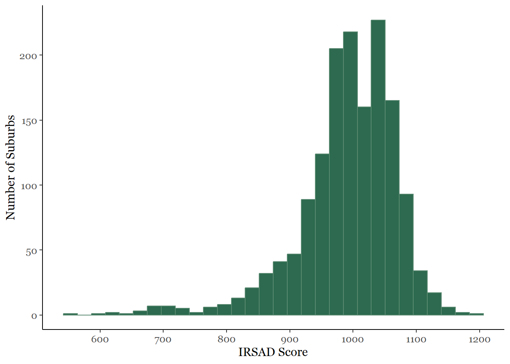
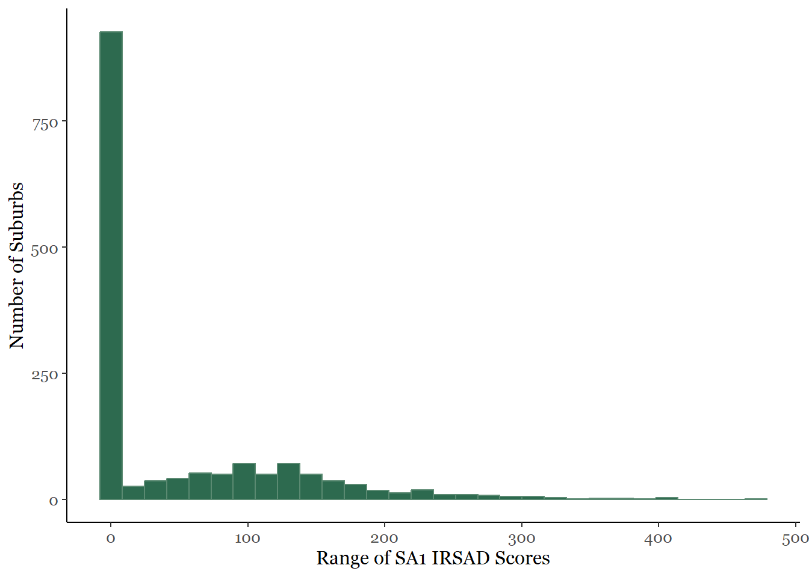
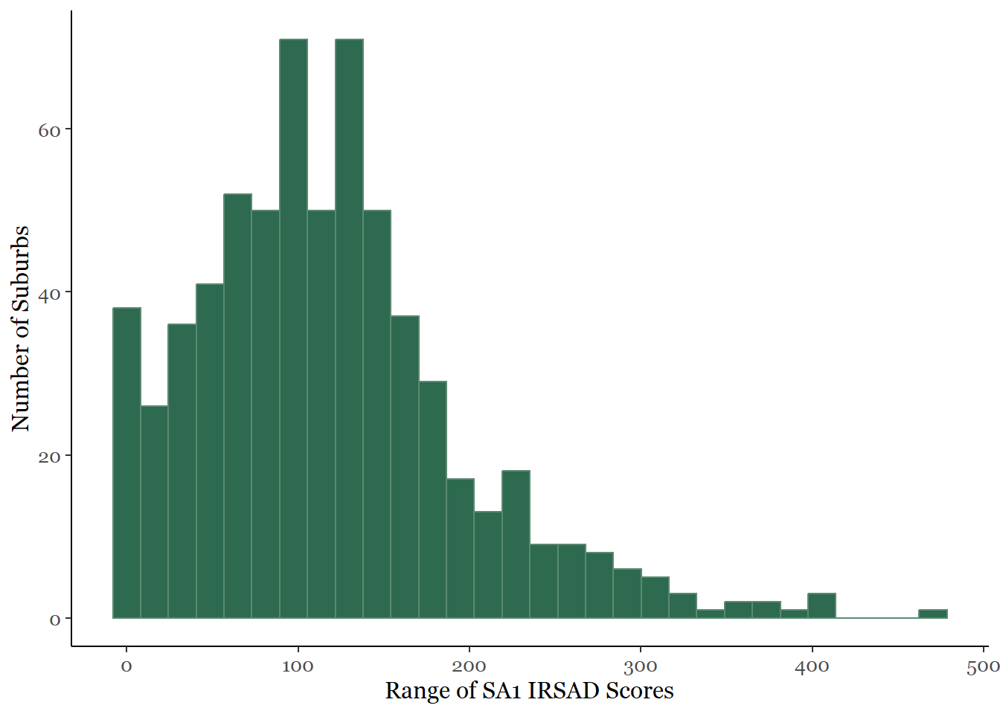
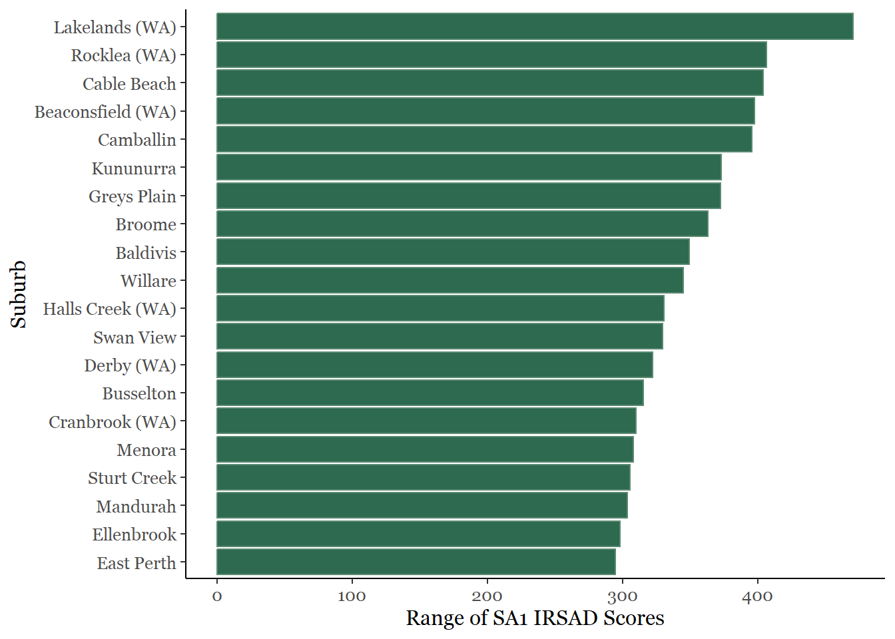
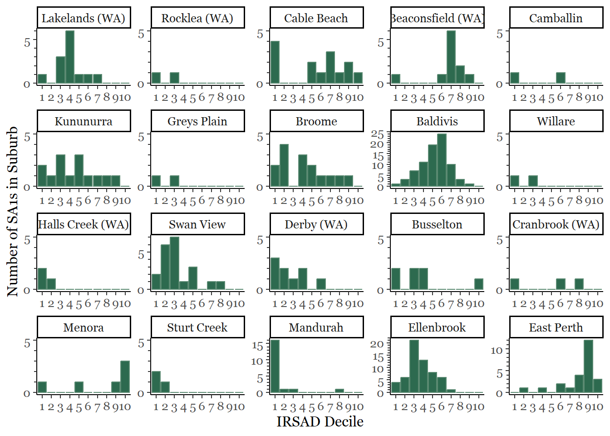
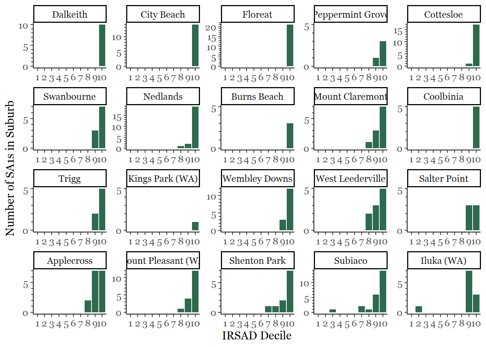

From the Australian Bureau of Statistics, the Index of Relative Socioeconomic Advantage and Disadvantage (IRSAD) is an index score made up of Census data that can be used to rank the relative socioeconomic advantage and disadvantage of statistical areas in Australia. For more information see the ABS SEIFA page.
This score applies to the relative advantage and disadvantage in a given area. A low score indicates more disadvantage and less advantage, while a high score indicates less disadvantage and more advantage. The distribution of IRSAD Scores for Western Australian suburbs is shown below.

It might be interesting to consider the variation within suburbs in Western Australia. IRSAD Scores are assigned to the smallest Statistical Area, known as SA1. Each suburb is made up of one or more SA1s. Each SA1 has between 200 to 800 residents. The graph below shows a histogram of the ranges (difference between maximum and minimum) IRSAD Scores for SA1s within given suburbs in WA.

There are some small/low population suburbs in WA which contain only one SA1. This is inflating the number of suburbs with a range in IRSAD scores of zero (the large peak in the histogram at 0). Let's re-plot, excluding suburbs which contain only one SA1.

From the above, we see that there are some suburbs with no variation in IRSAD scores (a range of zero) and some with a wide range of scores. Let's look at the 20 suburbs with the widest range in IRSAD scores among their SA1s.

Notice that few of these suburbs (other than East Perth and Menora) are close to the Perth CBD. We see popular regional to remote destinations such as Busselton and Broome represented in this list.
For these 20 suburbs, what is the variation of the IRSAD Deciles of their SA1s? The following plot shows the number of SA1s within each of the 20 suburbs in each IRSAD Decile for all of Australia, where Decile 1 represents the lowest 10% of IRSAD Scores, up to Decile 10 which includes the highest 10% of IRSAD Scores in Australia.

Each of these 20 suburbs shows a distinct pattern in the distribution of the IRSAD Deciles of their SA1s. Some, such as Beaconsfield and Cable Beach, show a concentration of SA1s at high IRSAD and a peak at the lowest IRSAD Decile, with not many SA1s falling in the middle range. Others, such as Baldivis and East Perth, are represented across almost the whole range of IRSAD Deciles, although they still have a clear peak.
Let's compare the variation of the IRSAD Deciles for the SA1s in the 20 most advantaged/least disadvantaged suburbs in WA (highest IRSAD scores).

The most advantaged/least disadvantaged (by IRSAD) suburbs in WA show little variation in the IRSAD Deciles of their SA1s, with the exception of Subiaco and Iluka.